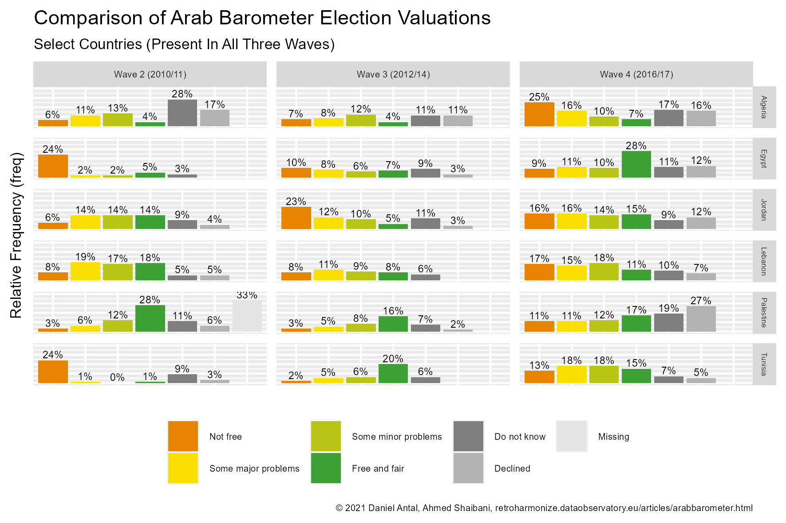

Case Study: Working With Arab Barometer Surveys
Daniel Antal
Yousef Ibrahim
Ahmed Shaibani
2021-06-29
Source:vignettes/arabbarometer.Rmd
arabbarometer.RmdThe goal of this case article is to show how you can harmonize survey data from Arab Barometer with the retroharmonize R package. The Arab Barometer is a nonpartisan research network that provides insight into the social, political, and economic attitudes and values of ordinary citizens across the Arab world.
cross-national surveys on the example of the Afrobarometer and the Eurobarometer.
The authors of retroharmonize, and rOpenGov open source developer community are not affiliated with Arab Barometer. To fully reproduce this example, you must acquire the data files from them, which is free of charge. If you download and use the survey data, the Arab Barometer does not take any responsibility for the results of the analysis of the Arab Barometer data. All results published using the Arab Barometer data and related content are responsibility of the respective author.
Some code examples of this case study are not evaluated, because we want to avoid re-publishing the original microdata files from Arab Barometer. If you want to fully replicate these code examples, you need to access the data directly from the arabbarometer.org website after agreeing to their policies and filling out a short questionnaire.
The files are stored on the website in .zip format, which may be extracted to folders. We assume that you extracted and copied all .sav files into a single folder that we will call in this vignette the arabbarometer_dir. Define your own arabbarometer_dir with file.path() in your own system.
| File name | Wave |
|---|---|
| ABI_English.sav | Arab Barometer Wave I |
| ABII_English.sav | Arab Barometer Wave II |
| ABIII_English.sav | Arab Barometer Wave III |
| ABIV_English.sav | Arab Barometer Wave IV |
| AB-WaveV-EN.sav | Arab Barometer Wave V |
In this case study, we will compare how people evaluated their parliamentary elections in 2010/2011, 2012/2014 and in 2016/17. To make this comparison, we must organize the Arab Barometer Wave II, Arab Barometer Wave III and Arab Barometer Wave IV data files into a single, tidy, data frame with a consistent labelling of valid and missing values.
knitr::include_graphics(
here('vignettes', 'arabb-comparison-select-country-chart.png')
)
Importing Arab Barometer Files
We start by importing the Arab Barometer files. The following chunk is not evaluated, and it contains all the 5 waves, not only the two selected waves for this tutorial. if you want to re-run this tutorial, you need to define your arabbarometer_dir and download the Arab Barometer files there. Alternatively, you can load the pre-saved results of the first steps in the first, vignette-setup chunk, in this case can start evaluating the R code chunks from document-merged-ab.
### use here your own <arabbarometer_dir> directory
ab <- dir(arabbarometer_dir, pattern = "sav$")
arabbarometer_rounds <- here(arabbarometer_dir, ab)
arab_waves <- read_surveys(arabbarometer_rounds, .f='read_spss')we appended meaningful identifiers to the file names as follows (you must follow the ordering of your files in your own arabbarometer_dir dir):
# In the vignette this is pre-loaded.
attr(arab_waves[[1]],"id") <- "Arab_Barometer_5"
attr(arab_waves[[2]],"id") <- "Arab_Barometer_1"
attr(arab_waves[[3]],"id") <- "Arab_Barometer_2"
attr(arab_waves[[4]],"id") <- "Arab_Barometer_3"
attr(arab_waves[[5]],"id") <- "Arab_Barometer_4"We use document_waves()to see the primary descriptive information of our survey wave (one harmonized survey set) files. Visually check that the file names correspond with the meaningful IDs that you gave to each survey wave, i.e., Arab_Barometer_1 corresponds with ABI_English.sav.
# In the vignette this is pre-loaded.
documented_arab_waves <- document_waves(arab_waves)
print(documented_arab_waves)
#> # A tibble: 5 x 5
#> id filename ncol nrow object_size
#> <chr> <chr> <int> <int> <dbl>
#> 1 Arab_Barometer_5 AB-WaveV-EN.sav 348 26780 78131600
#> 2 Arab_Barometer_1 ABI_English.sav 182 7337 12089512
#> 3 Arab_Barometer_2 ABII_English.sav 469 12782 51603152
#> 4 Arab_Barometer_3 ABIII_English.sav 297 14809 37826816
#> 5 Arab_Barometer_4 ABIV_English.sav 291 9000 23315888We obtained 5 nested lists in the arab_waves list, each of them containing data of one Arab Barometer survey wave (the same surveys taken roughly at the same time, and with the same questions in different languages and countries.). To create longitudinal tables, i.e., join several survey waves into a single table, it is important to review the methodology of each round of Arabbarometer’s surveys, its structure, modifications, and changes in topics of interest.
Joint Metadata Creation
In this step, we build a comprehensive metadata table that maps information about variable names and labels of the survey data. Each row in the table below refers to a different variable in the survey data file. This is accomplished using the metadata_create() function, which collects metadata from survey data files, normalizes variable labels, and defines the valid and missing value ranges, codes, and labels.
# In the vignette this is pre-loaded.
arabbarometer_metadata <- lapply ( X = arab_waves, FUN = metadata_create)
arabbarometer_metadata <- do.call(rbind, arabbarometer_metadata)Let’s randomly review some metadata:
set.seed(2021)
arabbarometer_metadata %>%
select (-all_of(c("filename", "class_orig"))) %>%
sample_n(6)
#> id var_name_orig
#> 1 Arab_Barometer_2 q7112
#> 2 Arab_Barometer_5 Q521_1
#> 3 Arab_Barometer_4 aid1b1lang
#> 4 Arab_Barometer_1 q2572
#> 5 Arab_Barometer_2 q5164
#> 6 Arab_Barometer_2 eg802
#> label_orig
#> 1 q7112 to what extent do you agree or disagree with the following statements 2 in order to eliminate global terrorism, the palestine issue must be solved
#> 2 guaranteed freedoms opinion expression
#> 3 aid1b1 respondent participated in language program
#> 4 q257 2 can you remember the name of the speaker leader of parliament
#> 5 q5164 to what extent do you agree or disagree with the following statements 4 a democratic system may have problems, yet it is better than other systems
#> 6 eg802 did you participate in the protests against former president hosni mubarak between january 25 and february 11, 2011
#> labels valid_labels na_labels na_range n_labels
#> 1 0, 1, 2, 3, 4, 8, 9 0, 1, 2, 3, 4, 8, 9 NA 7
#> 2 1, 2, 3, 4, 98, 99 1, 2, 3, 4, 98, 99 NA 6
#> 3 0, 1 0, 1 NA 2
#> 4 1, 2, 97, 98, 99 1, 2, 97, 98, 99 NA 5
#> 5 0, 1, 2, 3, 4, 8, 9 0, 1, 2, 3, 4, 8, 9 NA 7
#> 6 0, 1, 2, 8, 9 0, 1, 2, 8, 9 NA 5
#> n_valid_labels n_na_labels
#> 1 7 0
#> 2 6 0
#> 3 2 0
#> 4 5 0
#> 5 7 0
#> 6 5 0We select from the metadata file rowid as the unique observation identifier, and some auxiliary variables: date with the interview date,the COUNTRY containing country where the interview was conducted, and wt as the weighting factor, and some “real” survey questions. The countries in the Arab Barometer datasets are countries from the Middle East and North Africa (MENA) region with a significant Arab speaking population. The data does not contain all the MENA countries, for example, Palestine is present in the dataset, but Israel is not.
The metadata table also helps you to identify survey items of interest; in our case, we chose Election, parliamentary, and Election to fork an exact question about parliamentary election, which is How would you evaluate the last parliamentary election?
Retrospective Survey Harmonization
Retrospective survey harmonization has two steps: variable harmonization and label harmonization.
Harmonizing the variable names
We start with the variable harmonization process.
to_harmonize_elections <- arabbarometer_metadata %>%
filter( .data$var_name_orig %in% c("rowid", "country","date", "wt")|
grepl("how would you evaluate the last parliamentary", .data$label_orig)) %>%
mutate(var_label = var_label_normalize(.data$label_orig)) %>%
mutate(var_label = case_when(
.data$var_name_orig == "country" ~ "Country",
.data$var_name_orig == "rowid" ~ "Unique ID AB English", # in pdf Unique ID AB English
.data$var_name_orig == "date" ~ "Date_of_interview",
.data$var_name_orig == "wt" ~ "Weight",
TRUE ~ " Evaluation in the last parliamentary elections")) %>%
mutate ( var_name = var_label_normalize(.data$var_label) )
set.seed(2021) # Let's see the same random example:
sample_n(to_harmonize_elections%>%
select ( all_of(c("id", "var_name", "var_label"))), 10)
#> id var_name
#> 1 Arab_Barometer_2 unique id ab english
#> 2 Arab_Barometer_1 country
#> 3 Arab_Barometer_3 weight
#> 4 Arab_Barometer_2 weight
#> 5 Arab_Barometer_4 evaluation in the last parliamentary elections
#> 6 Arab_Barometer_3 country
#> 7 Arab_Barometer_5 date_of_interview
#> 8 Arab_Barometer_4 weight
#> 9 Arab_Barometer_4 country
#> 10 Arab_Barometer_3 unique id ab english
#> var_label
#> 1 Unique ID AB English
#> 2 Country
#> 3 Weight
#> 4 Weight
#> 5 Evaluation in the last parliamentary elections
#> 6 Country
#> 7 Date_of_interview
#> 8 Weight
#> 9 Country
#> 10 Unique ID AB English- Variable harmonization means that the date of the interview should be called exactly the same way in each survey table, i.e. not
dateanddate_of_interview, onlydate_of_interview. The auxiliary and demography variables appear to be relatively well harmonized in the Arab Barometer, but the other survey items will require more work. - Label harmonization means that the label for Algeria in the
countryvariable must be a single value, for example,Algeria, instead ofAlgeria,algeria,1. Algeria.
In this case, the variable name harmonization is a simple task. The names need a bit of normalization for programmatic use.
The function merge_waves() harmonizes the variable names, the variable labels, the survey identifiers, and returns a list of surveys (of class survey().) The parameter var_harmonization must be a list or a data frame that contains at least the original file name (filename), original variable names (var_name_orig), the new variable names (var_name) and their labels (var_label), so that the function correctly makes the harmonization steps.
# In the vignette this is pre-loaded.
merged_ab_elections <- merge_waves(
waves = arab_waves,
var_harmonization = to_harmonize_elections)
document_waves(merged_ab_elections)
#> # A tibble: 5 x 5
#> id filename ncol nrow object_size
#> <chr> <chr> <int> <int> <dbl>
#> 1 Arab_Barometer_5 AB-WaveV-EN.sav 4 26780 2991624
#> 2 Arab_Barometer_1 ABI_English.sav 2 7337 694064
#> 3 Arab_Barometer_2 ABII_English.sav 4 12782 1443896
#> 4 Arab_Barometer_3 ABIII_English.sav 5 14809 1790104
#> 5 Arab_Barometer_4 ABIV_English.sav 4 9000 1017088Let’s take a look at the variables:
lapply (merged_ab_elections, names)
#> [[1]]
#> [1] "unique id ab english" "country" "weight"
#> [4] "date_of_interview"
#>
#> [[2]]
#> [1] "unique id ab english" "country"
#>
#> [[3]]
#> [1] "unique id ab english"
#> [2] "country"
#> [3] "evaluation in the last parliamentary elections"
#> [4] "weight"
#>
#> [[4]]
#> [1] "unique id ab english"
#> [2] "country"
#> [3] "date_of_interview"
#> [4] "weight"
#> [5] "evaluation in the last parliamentary elections"
#>
#> [[5]]
#> [1] "unique id ab english"
#> [2] "country"
#> [3] "weight"
#> [4] "evaluation in the last parliamentary elections"The variable harmonization took place, but the variable names are not very practical for programmatic use. We apply snakecase variable naming:
library(snakecase)
merged_ab_elections <- lapply(
merged_ab_elections,
FUN = function(df) df %>%
rename_all(snakecase::to_snake_case)
)Now the variable names are ready to use in the programmatic way:
lapply(merged_ab_elections, names)
#> [[1]]
#> [1] "unique_id_ab_english" "country" "weight"
#> [4] "date_of_interview"
#>
#> [[2]]
#> [1] "unique_id_ab_english" "country"
#>
#> [[3]]
#> [1] "unique_id_ab_english"
#> [2] "country"
#> [3] "evaluation_in_the_last_parliamentary_elections"
#> [4] "weight"
#>
#> [[4]]
#> [1] "unique_id_ab_english"
#> [2] "country"
#> [3] "date_of_interview"
#> [4] "weight"
#> [5] "evaluation_in_the_last_parliamentary_elections"
#>
#> [[5]]
#> [1] "unique_id_ab_english"
#> [2] "country"
#> [3] "weight"
#> [4] "evaluation_in_the_last_parliamentary_elections"The merged_ab_elections is a list, which nests the individual, subsetted surveys. We use the nested list form, because a critical step is missing: the survey have differing number of columns, so they cannot be joined into a long-form, tidy data frame. Let’s remove the nonessential variables, and remove the survey waves that do not contain our variable of interest.
In our case, we decided to: - omit completely both waves 1 and 5, because none of them has our key variable Parliamentary Election Evaluation; - omit date of interview as it is missing in both waves (rounds) 2 and 4.
ab_elections <- merged_ab_elections[-c(1,2)]
lapply ( ab_elections, function(x) attributes(x)$id )
#> [[1]]
#> [1] "Arab_Barometer_2"
#>
#> [[2]]
#> [1] "Arab_Barometer_3"
#>
#> [[3]]
#> [1] "Arab_Barometer_4"
ab_elections <- lapply(ab_elections, function(x){
if ("date_of_interview" %in% names(x)){
subset(x, select = -c(date_of_interview))
} else{
subset(x)
}
})
document_waves(ab_elections)
#> # A tibble: 3 x 5
#> id filename ncol nrow object_size
#> <chr> <chr> <int> <int> <dbl>
#> 1 Arab_Barometer_2 ABII_English.sav 4 12782 1443896
#> 2 Arab_Barometer_3 ABIII_English.sav 4 14809 1670608
#> 3 Arab_Barometer_4 ABIV_English.sav 4 9000 1017088Variable Label Harmonization
The R language uses special NA values for missing values. These are differently encoded in SPSS, and in various survey programs unfortunately are not always consistently used. Compared to our Eurobarometer and Afrobarometer use cases, the Arab Barometer needs particularly lot of harmonization, because - The published Arab Barometer files do not contain either missing range, nor the explicitly stated missing cases, and the values that refer to various missing cases are mixed with valid values; - The missing cases, like the valid cases, are labelled inconsistently.
Our variable label harmonization therefore takes two steps: carefully labelling and removing the missing cases from the valid range, and then harmonizing the valid value labels.
Arabbarometer’s SPSS files use various missing value categories, we must carefully harmonize them, too. The entire value range is the following:
collect_val_labels(
to_harmonize_elections %>%
filter(grepl("evaluation in the last parliamentary elections",
.data$var_name))
)
#> [1] "0. missing"
#> [2] "1. they were completely free and fair"
#> [3] "2. they were free and fair, with some minor problems"
#> [4] "3. they were free and fair, with some major problems"
#> [5] "4. they were not free and fair"
#> [6] "8. i don't know"
#> [7] "9. declined to answer"
#> [8] "Missing"
#> [9] "They were completely free and fair"
#> [10] "They were free and fair, with some minor breaches"
#> [11] "They were free and fair, with some major breaches"
#> [12] "They were not free and fair"
#> [13] "Don't know"
#> [14] "Refuse"
#> [15] "Completely free and fair"
#> [16] "Free and fair, but with minor problems"
#> [17] "Free and fair, with major problems"
#> [18] "Not free or fair"
#> [19] "Don't know (Do not read)"
#> [20] "Decline to answer (Do not read)"For example, Refuse and Decline to answer (Do not read) are categories when the interviewee refused to form an opinion. This is a different case from Missing: in Saudi Arabia, there were not parliamentary elections, therefore the question was not asked from interviewees in this country.
The question of interest How would you evaluate the last parliamentary election? is described as a closed form survey questions where answers are predetermined and the respondents chose one of the answer options. This question has four-point ordinal scales, therefore, data is best to analyzed in an ordinal representation that does not assume equidistant values (i.e., as factors.)
We created the following retrospective labelling and coding:
- Answer with 1 corresponding to the
free_and_fair(highest democratic election process). - Answer with 2 corresponding to
some_minor_problems. - Answer with 3 corresponding to
some_major_problems. - Answer with 4 corresponding to
not_free(lowest democratic election process). - We use three types of missing value categories:
Do not know,DeclinedandMissing.
The harmonization function from the harmonize_values() is a prototype function. We could call it directly, but instead we create harmonize_arabb_eval() to avoid the complicated parameterization.
harmonize_arabb_eval <- function(x){
label_list <- list(
from = c("(\\d\\.\\s)?(\\w+\\s\\w+\\s)?([c|C]ompletely free and fair)",
"(.+)(but)?\\s?(with)\\s(some)?\\s{0,}(minor\\s\\w+)",
"(.+)(but)?\\s?(with)\\s(some)?\\s{0,}(major\\s\\w+)",
"(.+)?([n|N]ot\\sfree\\s\\w+\\s\\w+)",
"((\\d.\\s{0,})?\\si\\s)?([d|D]on.t\\sknow)(\\s\\(Do\\snot\\sread\\))?",
"[R|r]efuse",
"(\\d.\\s)?[d|D]ecline[d]?(\\s\\w+\\s\\w+)(\\s.Do not read.)?",
"(\\d.\\s)?[m|M]issing"),
to = c("free_and_fair",
"some_minor_problems",
"some_major_problems",
"not_free",
"do_not_know","declined","declined","missing"),
numeric_values = c(3,2,1,0,99997,99998,99998,99999))
harmonize_values(x, harmonize_labels = label_list,
na_values = c("do_not_know"= 99997,
"declined"=99998,
"missing"=99999
))
}The problem is that the numeric codes are not only used for the evaluation question, but also for country names. Beware not to apply the election evaluation code tabel to the country names!
harmonized_evaluations <- harmonize_waves(
waves = lapply ( ab_elections, function(x) x %>%
select (-.data$country)),
.f =harmonize_arabb_eval )There is a bit of a work with the country variable, too, but this variable has no missing cases, and instead of creating a labelling, we will convert them into factors after cleaning. We only show a few examples of the labelling issues:
country_labels <- collect_val_labels (to_harmonize_elections %>%
filter (.data$var_name == "country"))
country_labels[grepl("lgeria|orocco|oman" , country_labels)]
#> [1] "Algeria" "Morocco" "algeria" "morocco" "1. Algeria"
#> [6] "13. morocco" "14. oman"Do not forget that our imported surveys use our special vector class to contain all metadata information that could be saved from the SPSS files. The base R as.character and as.factor methods should be avoided, because they do not understand the SPSS labels. Use the as_character() and as_factor methods clean the country names. We could use harmonize_values(),` too, but that would be a lot of work, because there are a lot of country labels present. So we only retain a factor representation of the country names, without keeping their labelling history.
normalize_country_names <- function(x) {
x <- trimws(gsub("\\d{1,}\\.\\s?","", tolower(as_character(x))), which = "both")
as_factor(snakecase::to_title_case(x))}
harmonize_countries <- lapply ( ab_elections,
function(x) x %>%
select ( -.data$evaluation_in_the_last_parliamentary_elections)
)
harmonized_countries <- lapply ( harmonize_countries, function(x) x %>%
mutate ( country = normalize_country_names(.data$country)) %>%
select (-any_of("date_of_interview")))
harmonized_countries <- do.call (rbind, harmonized_countries)Let’s see if there is any further work to do!
summary(harmonized_countries)
#> unique_id_ab_english country weight
#> Length:36591 Jordan : 4483 Min. : 0.02837
#> Class :character Lebanon : 4087 1st Qu.: 0.70908
#> Mode :character Algeria : 3636 Median : 0.96349
#> Egypt : 3615 Mean : 0.99928
#> Palestine: 3600 3rd Qu.: 1.17818
#> Tunisia : 3595 Max. :16.48268
#> (Other) :13575 NA's :1
summary(harmonized_evaluations)
#> unique_id_ab_english weight
#> Length:36591 Min. : 0.02837
#> Class :character 1st Qu.: 0.70908
#> Mode :character Median : 0.96349
#> Mean : 0.99928
#> 3rd Qu.: 1.17818
#> Max. :16.48268
#> NA's :1
#> evaluation_in_the_last_parliamentary_elections
#> Min. : 0
#> 1st Qu.: 0
#> Median : 2
#> Mean :15099
#> 3rd Qu.: 3
#> Max. :99999
#> NA's :2004We see a missing weight, and we will impute 1 for this particular value, so that we can use weighted averaging in the numerical representation of our data.
harmonized_ab_dataset <- harmonized_countries %>%
left_join(harmonized_evaluations, by = c("unique_id_ab_english", "weight") ) %>%
rename ( eval_parl = .data$evaluation_in_the_last_parliamentary_elections) %>%
mutate (
wave = as_factor(gsub(".*(\\b[A-Z0-9]+).*", "\\1", .data$unique_id_ab_english)),
weight = ifelse(is.na(.data$weight), 1, .data$weight),
eval_parl = as_factor(.data$eval_parl),
country = as_factor(.data$country))
summary(harmonized_ab_dataset)
#> unique_id_ab_english country weight
#> Length:36591 Jordan : 4483 Min. : 0.02837
#> Class :character Lebanon : 4087 1st Qu.: 0.70908
#> Mode :character Algeria : 3636 Median : 0.96349
#> Egypt : 3615 Mean : 0.99928
#> Palestine: 3600 3rd Qu.: 1.17818
#> Tunisia : 3595 Max. :16.48268
#> (Other) :13575
#> eval_parl wave
#> not_free :9453 ABII :12782
#> some_minor_problems:8141 ABIII:14809
#> free_and_fair :7434 ABIV : 9000
#> do_not_know :4954
#> some_major_problems:4337
#> (Other) : 268
#> NA's :2004Categorical And Numeric Coding
The labeled survey data was stored in labelled_spss_survey() vectors, which is a complex class that retains metadata for reproducibility, but most statistical packages work with numeric or categorical (factor) data. The data can be converted to any of these, but you should use the methods of labelled_spss_survey() for this purpose, i.e., as_numeric() or as_factor(). (See more why you should not fall back on the more generic as.factor() or as.numeric() methods in The labelled_spss_survey class vignette.)
Due to the categorical format of the question of MENA parliamentary election evaluation in the Arab Barometer survey rounds, we decided to present the election variable in its categorical format. We show the unweighted tallies for each evaluation category, and a weighted sum, which the rounded number of the category counts multiplied by the respondent’s post-stratification weight.
categorical_summary <- harmonized_ab_dataset %>%
select ( -all_of(c("unique_id_ab_english")) ) %>%
group_by ( .data$country, .data$wave, .data$eval_parl ) %>%
summarize (n = n(),
weighted = round(n*weight, 0)
) %>%
ungroup()
set.seed(2021)
categorical_summary %>% sample_n(12)
#> # A tibble: 12 x 5
#> country wave eval_parl n weighted
#> <fct> <fct> <fct> <int> <dbl>
#> 1 Sudan ABIII not_free 360 176
#> 2 Lebanon ABIV some_minor_problems 412 341
#> 3 Lebanon ABIII free_and_fair 271 556
#> 4 Morocco ABIV some_minor_problems 386 362
#> 5 Lebanon ABIV some_minor_problems 412 377
#> 6 Lebanon ABII some_major_problems 268 242
#> 7 Lebanon ABIII not_free 272 268
#> 8 Tunisia ABIV free_and_fair 302 296
#> 9 Algeria ABII do_not_know 407 326
#> 10 Morocco ABIII some_minor_problems 328 375
#> 11 Jordan ABIII free_and_fair 172 410
#> 12 Sudan ABIII not_free 360 439The output as shown in the table above indicates the number of valuations given by interviewees to the election evaluation question, by country and by survey wave. In the table below (which we only print in part), we assign numeric values to the evaluation categories. To recall our simple coding: - 3 = Free and fair - 2 = Some minor problems - 1 = Some major problems - 0 = Not free.
numeric_summary <- harmonized_ab_dataset %>%
select ( -all_of(c("unique_id_ab_english")) ) %>%
mutate ( eval_parl = as_numeric(.data$eval_parl)) %>%
group_by ( .data$country, .data$wave ) %>%
summarize (
mean = weighted.mean(.data$eval_parl, w = .data$weight),
median = median(.data$eval_parl)
) %>%
ungroup()
#> `summarise()` has grouped output by 'country'. You can override using the `.groups` argument.In the numeric summary we show the weighted average valuations and the unweighted, typical values. These correspond with highest tallies for the categorical (and unweighted) counts.
set.seed(2021)
numeric_summary %>% sample_n(12)
#> # A tibble: 12 x 4
#> country wave mean median
#> <fct> <fct> <dbl> <dbl>
#> 1 Iraq ABII 2.53 2
#> 2 Egypt ABIV 3.38 4
#> 3 Lebanon ABIV NA NA
#> 4 Kuwait ABIII 3.27 3
#> 5 Morocco ABIV 3.45 3
#> 6 Lebanon ABII 2.69 3
#> 7 Sudan ABIII 2.59 3
#> 8 Morocco ABIII 2.82 3
#> 9 Tunisia ABIII 3.59 4
#> 10 Tunisia ABII 1.48 1
#> 11 Libya ABIII 3.11 4
#> 12 Egypt ABIII 2.88 3
knitr::include_graphics(
here('vignettes', 'arabb-comparison-chart.png')
)
knitr::include_graphics(
here('vignettes', 'arabb-comparison-country-chart.png')
)
We release the harmonized datasets with the code and the tutorial for further review and potential corrections.
Replication Data, Citations and Related work
Replication Data
The used datafiles and the metadata tables, and harmonized tables are too large to be hosted in a released R package. We deposited the results for further review and potential improvements on from Zenodo. All comments are corrections are welcome.
harmonized_ab_data <- harmonized_ab_dataset %>%
rename ( id = .data$unique_id_ab_english ) %>%
mutate (eval_parl_num = as_numeric(.data$eval_parl),
eval_parl_cat = as_factor(.data$eval_parl)) %>%
select (all_of(c("id", "country", "eval_parl_num", "eval_parl_cat", "wave")))
haven::write_sav(data = harmonized_ab_data,
here("data-raw", "arabb", "harmonized_arabb_waves.sav"))
write.csv(harmonized_ab_data,
here("data-raw", "arabb", "harmonized_arabb_waves.csv"),
row.names=FALSE)
write.csv(categorical_summary,
here("data-raw", "arabb", "arabb_categorical_summary.csv"),
row.names=FALSE)
write.csv(numeric_summary,
here("data-raw", "arabb", "arabb_numeric_summary.csv"),
row.names=FALSE)
# The metadata file contains list objects, which cannot be represented
# in a flat csv file format.
saveRDS(arabbarometer_metadata,
here("data-raw", "arabb", "arabbarometer_metadata.rds")
)
## The lists of value labels are dropped from the csv output.
write.csv(arabbarometer_metadata [
, -which (sapply ( arabbarometer_metadata, class) == "list")],
here("data-raw", "arabb","arabb_metadata_simplified.csv"), row.names=FALSE)Daniel Antal, & Ahmed Shaibani. (2021). Replication Data for the retroharmonize R Package Case Study: Working With Arab Barometer Surveys (Version 0.1.6) [Data set]. Zenodo. https://doi.org/10.5281/zenodo.5034741
Citing the data sources
Arab Baromeeter data: cite Arab Barometer.
Citing the retroharmonize R package
For main developer and contributors, see the package homepage.
This work can be freely used, modified and distributed under the GPL-3 license:
citation("retroharmonize")
#>
#> To cite package 'retroharmonize' in publications use:
#>
#> Daniel Antal (2021). retroharmonize: Ex Post Survey Data
#> Harmonization. R package version 0.1.17.
#> https://retroharmonize.dataobservatory.eu/
#>
#> A BibTeX entry for LaTeX users is
#>
#> @Manual{,
#> title = {retroharmonize: Ex Post Survey Data Harmonization},
#> author = {Daniel Antal},
#> year = {2021},
#> note = {R package version 0.1.17},
#> url = {https://retroharmonize.dataobservatory.eu/},
#> }Contact
For contact information, see the package homepage.
Version info
Daniel Antal, & Ahmed Shaibani. (2021, June 26). Case Study: Working With Arab Barometer Surveys for the retroharmonize R package (Version 0.1.6). Zenodo. https://doi.org/10.5281/zenodo.5034759
This tutorial was created in the following environment, and can be downloaded in PDF format from 10.5281/zenodo.5034759:
sessionInfo()
#> R version 4.1.0 (2021-05-18)
#> Platform: x86_64-w64-mingw32/x64 (64-bit)
#> Running under: Windows 10 x64 (build 17763)
#>
#> Matrix products: default
#>
#> locale:
#> [1] LC_COLLATE=English_United States.1252
#> [2] LC_CTYPE=English_United States.1252
#> [3] LC_MONETARY=English_United States.1252
#> [4] LC_NUMERIC=C
#> [5] LC_TIME=English_United States.1252
#> system code page: 1250
#>
#> attached base packages:
#> [1] stats graphics grDevices utils datasets methods base
#>
#> other attached packages:
#> [1] snakecase_0.11.0 knitr_1.33 ggplot2_3.3.5
#> [4] tidyr_1.1.3 dplyr_1.0.7 retroharmonize_0.1.17
#>
#> loaded via a namespace (and not attached):
#> [1] tidyselect_1.1.1 xfun_0.24 bslib_0.2.5.1 purrr_0.3.4
#> [5] haven_2.4.1 labelled_2.8.0 colorspace_2.0-2 vctrs_0.3.8
#> [9] generics_0.1.0 htmltools_0.5.1.1 yaml_2.2.1 utf8_1.2.1
#> [13] rlang_0.4.11 pkgdown_1.6.1 jquerylib_0.1.4 pillar_1.6.1
#> [17] glue_1.4.2 withr_2.4.2 DBI_1.1.1 lifecycle_1.0.0
#> [21] stringr_1.4.0 munsell_0.5.0 gtable_0.3.0 ragg_1.1.3
#> [25] memoise_2.0.0 evaluate_0.14 forcats_0.5.1 fastmap_1.1.0
#> [29] ps_1.6.0 fansi_0.5.0 highr_0.9 scales_1.1.1
#> [33] cachem_1.0.5 desc_1.3.0 jsonlite_1.7.2 systemfonts_1.0.2
#> [37] fs_1.5.0 textshaping_0.3.5 hms_1.1.0 png_0.1-7
#> [41] digest_0.6.27 stringi_1.6.2 rprojroot_2.0.2 grid_4.1.0
#> [45] cli_2.5.0 here_1.0.1 tools_4.1.0 magrittr_2.0.1
#> [49] sass_0.4.0 tibble_3.1.2 crayon_1.4.1 pkgconfig_2.0.3
#> [53] ellipsis_0.3.2 rstudioapi_0.13 assertthat_0.2.1 rmarkdown_2.9
#> [57] R6_2.5.0 compiler_4.1.0